减薄肩臀盖板与脚掌，保留发条和机械关节；沿木构件长轴绘纹，铁轴与铜箍分离。参考Alex鬃狼口鼻、躯干与四肢的识别关系。
软件对照：左旧右新，相同相机与共同取景范围。以下所有软件模型均逐面采样实际PNG。
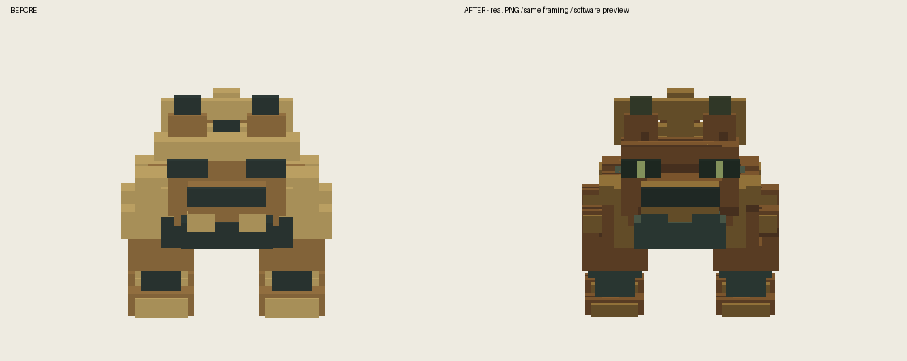
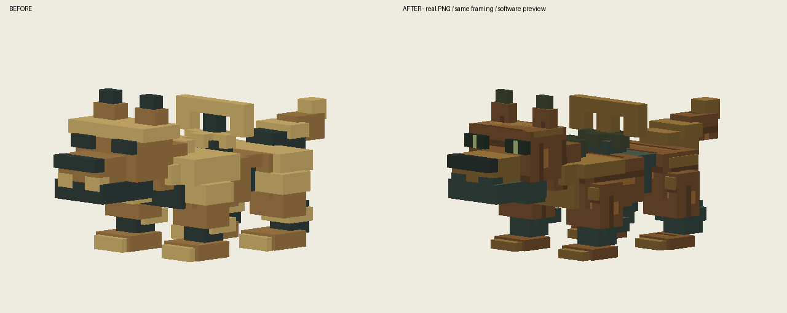
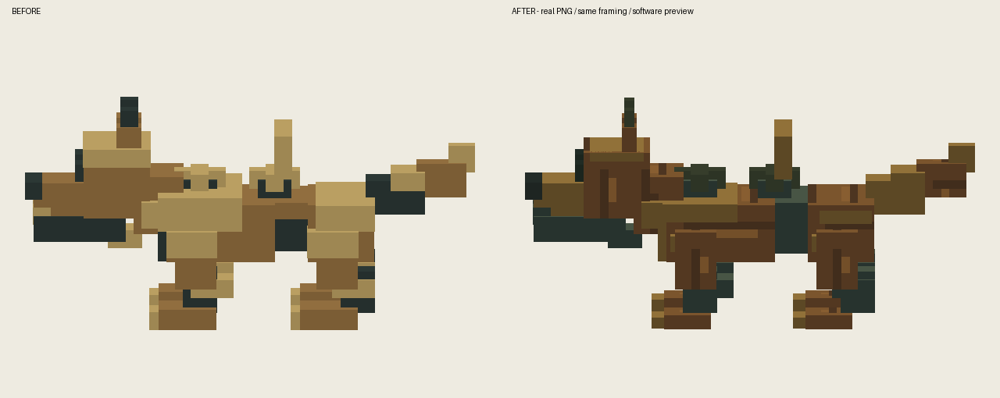
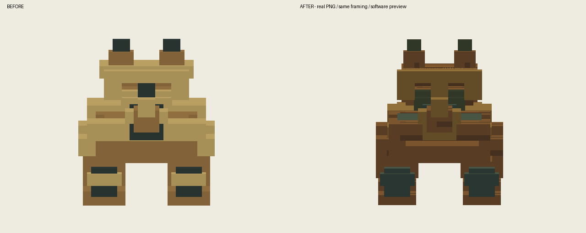
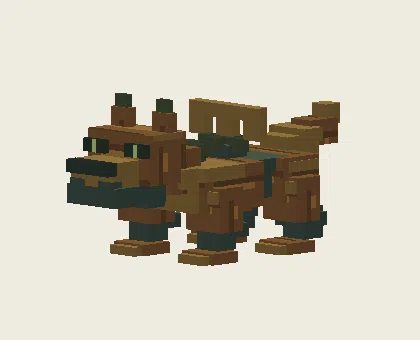
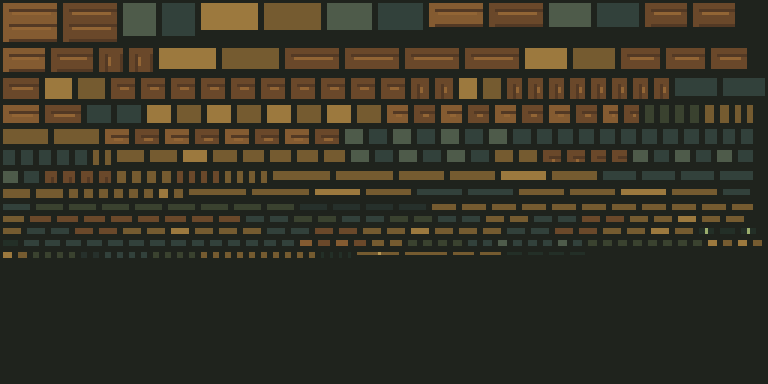
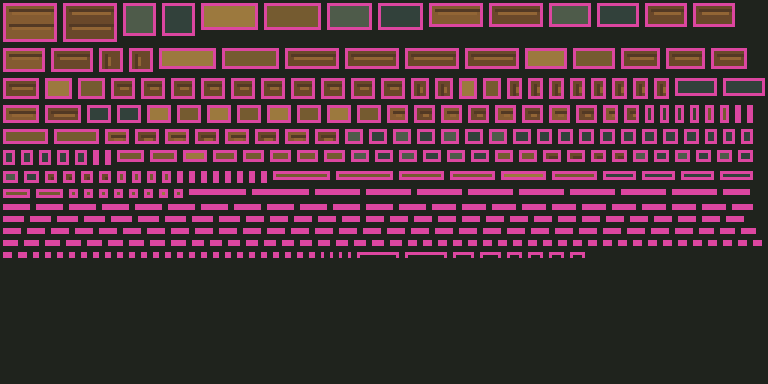
隔离静音测试存档；验证加载、原动作与重载，不代表自然战斗或多人验收。
12-xunshan_mujiaquan-front
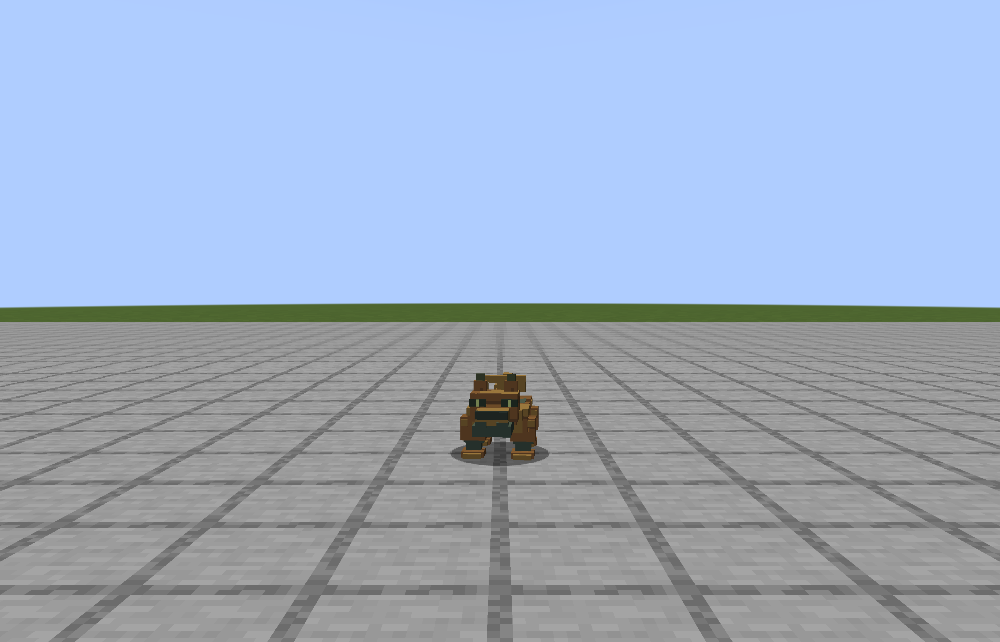
13-xunshan_mujiaquan-45
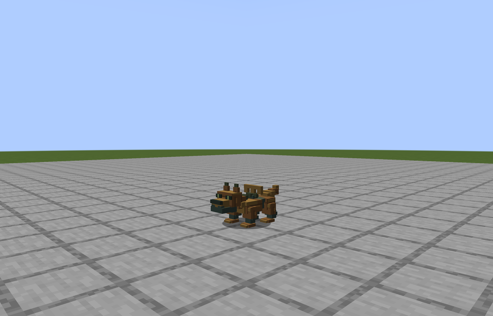
14-xunshan_mujiaquan-side
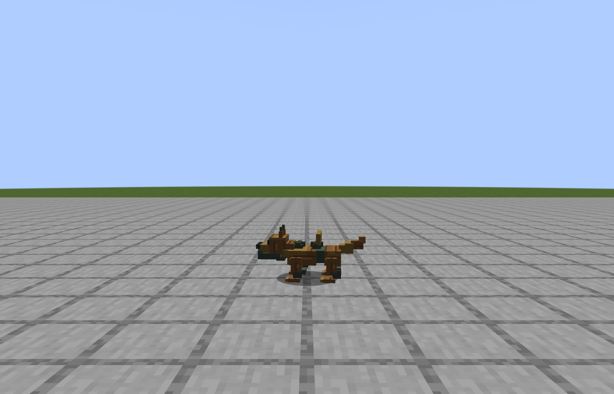
15-xunshan_mujiaquan-back
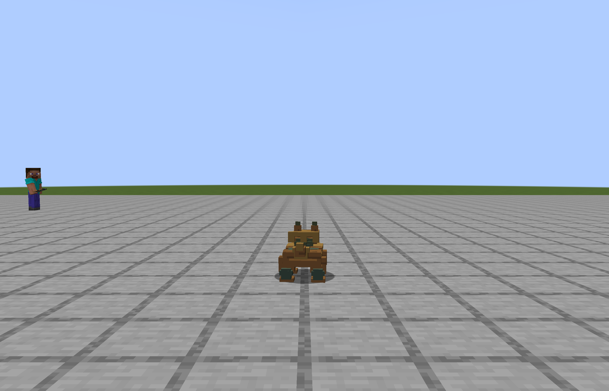
16-xunshan_mujiaquan-walk
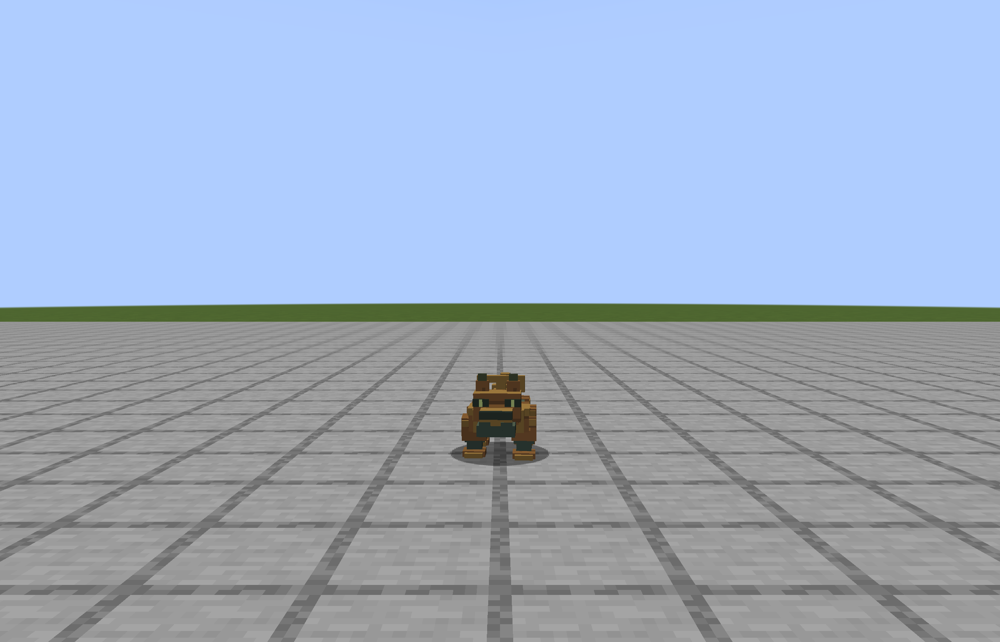
17-xunshan_mujiaquan-run
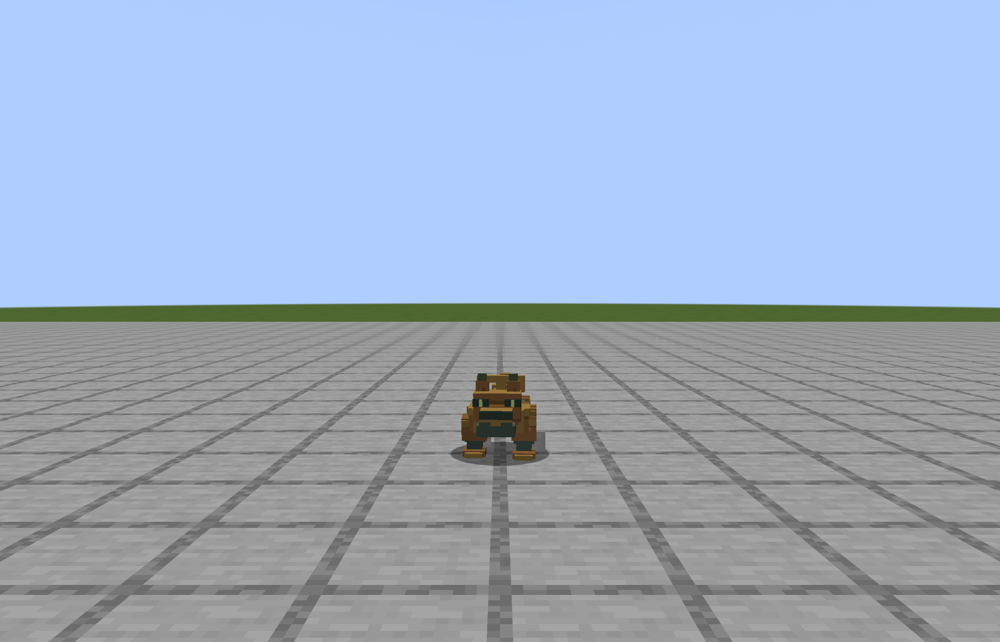
18-xunshan_mujiaquan-attack-tell
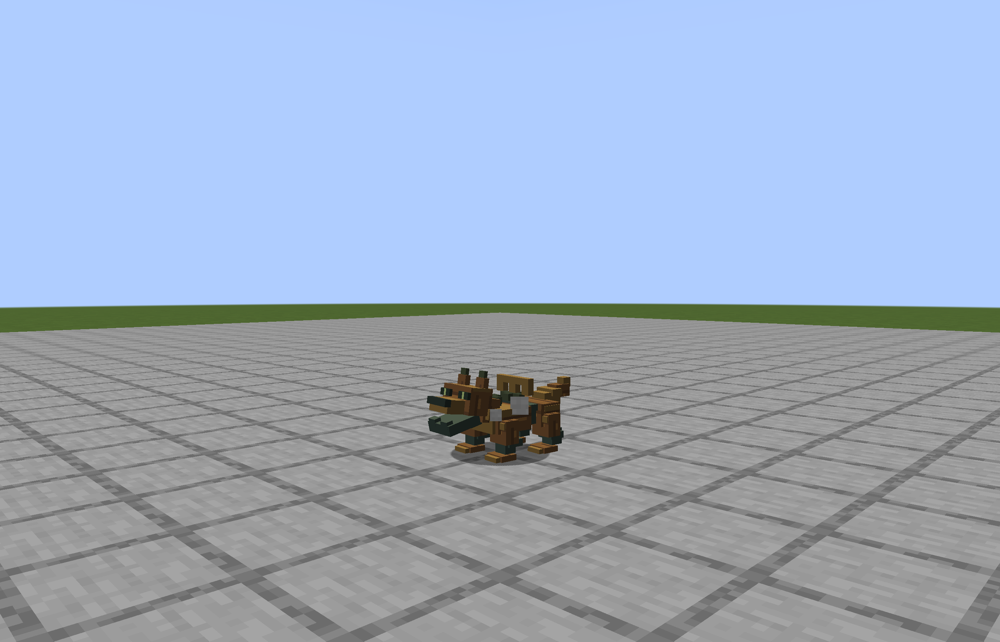
19-xunshan_mujiaquan-attack-contact
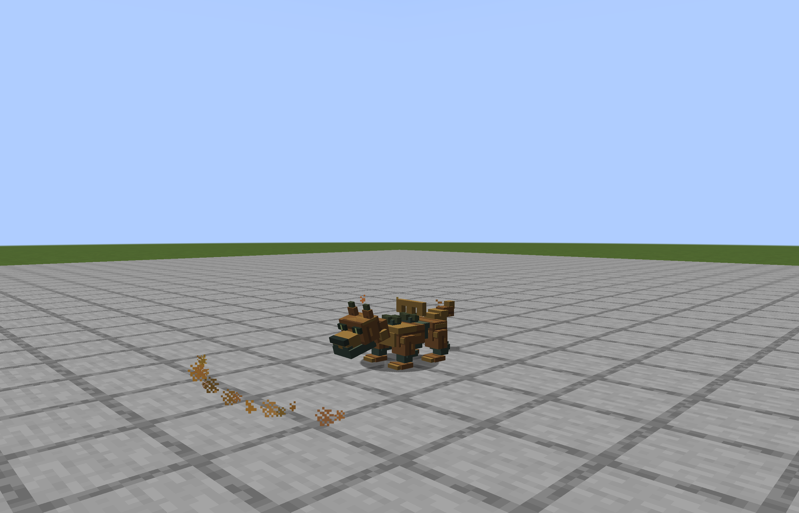
20-xunshan_mujiaquan-special-tell
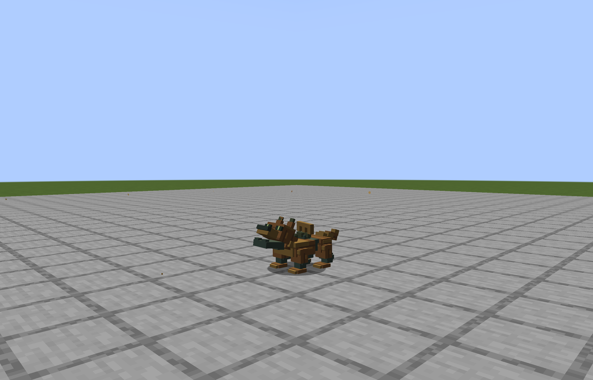
21-xunshan_mujiaquan-special-contact
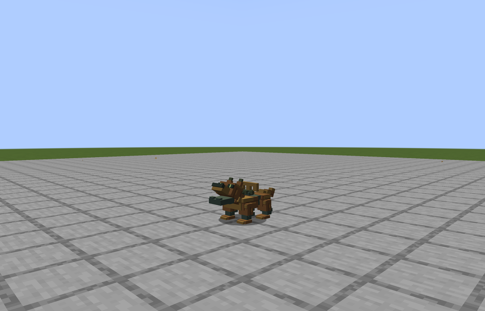
22-xunshan_mujiaquan-hurt
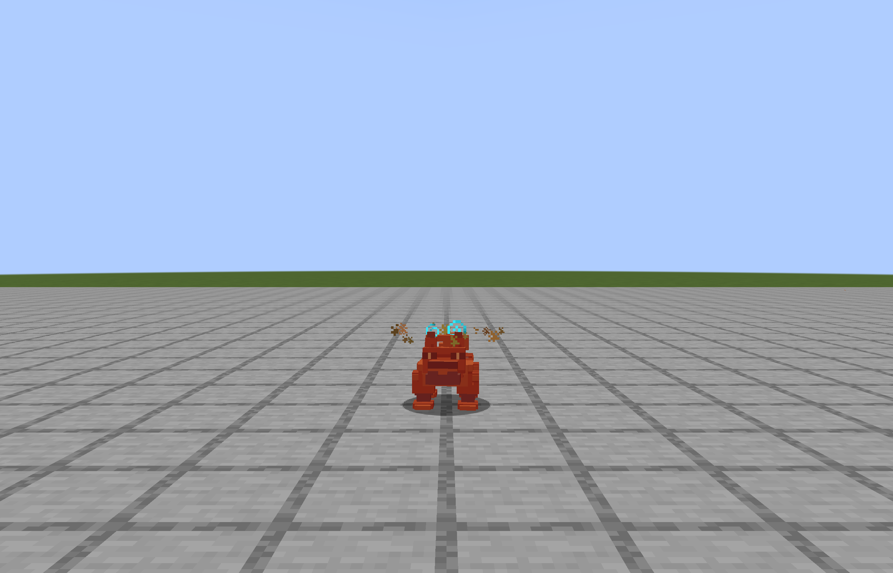
23-xunshan_mujiaquan-death
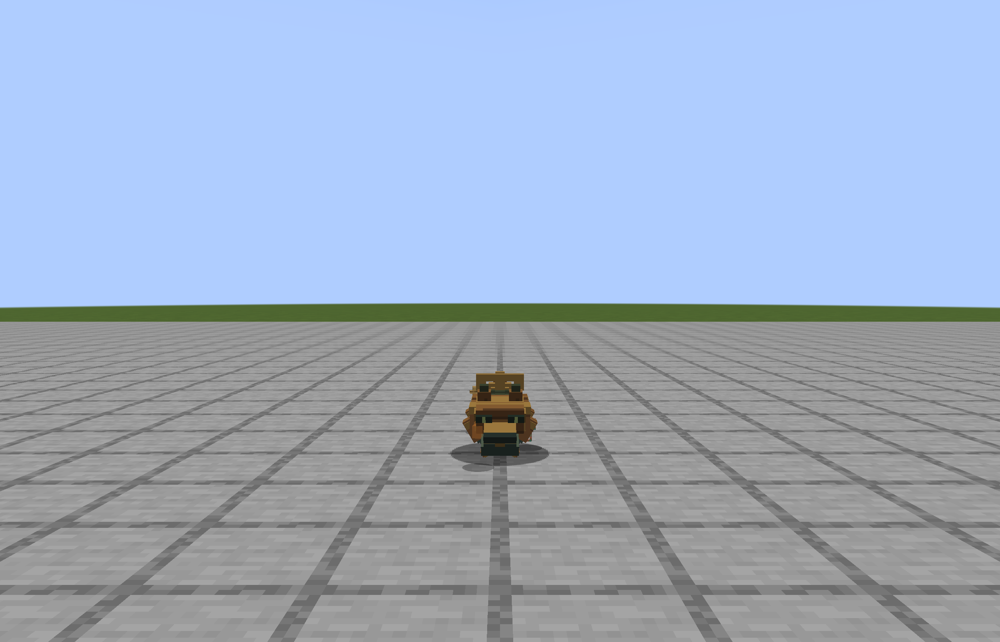